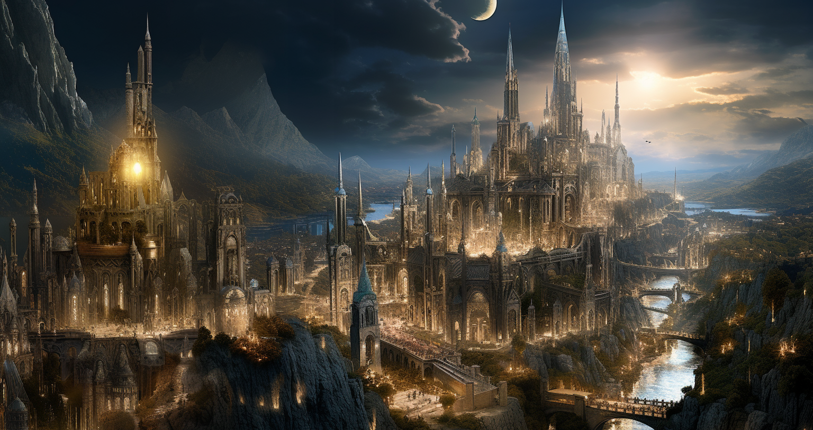

|

Elysian CityAt the radiant heart of the Land of Dawns stands the majestic Elysian City, a capital that rises like a beacon of hope in a world threatened by magic and night. Its towering spires reach towards the sky as witnesses of resistance against the Zenith, their peaks touching the clouds in a defiant gesture against the eternal night looming over other lands. The streets of Elysian City, carved in gleaming stone, are renowned for their impeccable architecture and luminous splendor. Along the alleys, the light of alchemical street lamps illuminates the city, creating a nightly spectacle that rivals the stars. Every corner of the city exudes a sense of security for those who adhere to the ideal world envisioned by Gideon, where prosperity and justice are the foundations that uphold it. However, behind the facade of this radiant city lies an unyielding truth: Elysian City is the embodiment of a world without magic or creatures of the night. While its towers reach the heights, they also symbolize the absence of shadows and the denial of the existence of those beings that roam in the dark lands. The hope emanating from Elysian City is a purifying light, but at the same time, a conscious denial of the duality of the universe that lies beyond its walls: The fate of those who go against its dogmas receives a fate much worse than death, and if death is what they receive, it is never a merciful one. |
| Gallery |
|---|